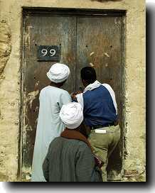

|
||||
Monday 30 NovemberThings proceeded much as yesterday. The stones are now all broken up and we are ready to proceed with the serious digging tomorrow morning once Helen Strudwick arrives. It seems as if half the local inhabitants will be there looking for work... Some filming was also undertaken with the film crew near Deir el-Bahari. Sunday 29 NovemberFirst thing the rope ladder was placed in the courtyard shaft, and then the tripod was set up so that the pulley could be attached to send baskets down the shaft. Then workmen went down it to begin breaking up the stones, and this continued for the rest of the day. The study of the ceramics continued, and various manuscript checking was undertaken in the tomb. Saturday 28 NovemberThe large mass of pottery needing to be studied as rapidly as possible means that a sampling strategy needs to be established. The ceramic team chose to select a number of squares and study their contents, and this work started today, beginning with a check through the range of fabrics identified in past seasons. On the digging front, preparations were put in train for continuing excavation on the large shaft in the courtyard. Presently 11.5 m deep, we expect it to go somewhat deeper before entering the burial chambers. However, a number of large stones need to be removed before the digging can start, which we hope will be in Tuesday 1 December. Today we took on six workmen under Reis Hassan Shamseddin, who prepared things by cleaning up the court, buying some new rope, and getting the rope ladder kindly lent to us by the German Archaeological Institute. Friday 27 NovemberDay off; Friday is the Holy Day of the week for Islam, and government departments are closed. Archaeologists usually study or go visiting monuments this day of the week. First steps were taken to obtain the rope ladder needed for the coming excavations. Thursday 26 NovemberThis morning the tomb was opened up for us by the Inspector of Antiquities who is attached to our mission, Ramadan Ahmed Aly. Whenever work ends for a season, the tomb is locked and sealed, and then a mass of stones is placed in front of the door. These have to be moved by the guards, and then the inspector checks the seal is intact and then opens the door. Time is usually spent the first day checking everything is OK, unpacking equipment, and getting the electricity supply connected. The expedition ceramics team, Dr Pamela Rose and Miss Gillian Pyke, immediately set to work sorting out the mass of pottery left over for study from the last two seasons in the courtyard (nearly two tonnes). |
||||
|
||||
Friday 20 NovemberSome preliminary filming for the TV programme is made at Highclere Castle in the UK, the home of Lord Carnarvon, whose grandfather and Howard Carter discovered the tomb of Tutankhamun in 1922. Lord Porchester, Lord Carnarvon's eldest son, and the castle manager, Adrian Wiley, are to accompany the film crew to Egypt. Here are some photos taken during the shooting. These pages are being prepared in Luxor on a Macintosh G3 Powerbook, with images taken with an Olympus D-600L digital camera. |
||||
|
All text and images © Nigel Strudwick 1998 |
 The Dig Diary 1998--Part 1
The Dig Diary 1998--Part 1© Nigel Strudwick 1997-2016